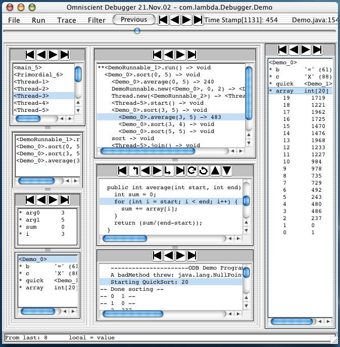

Omniscient Debugging
Omniscient Debugging is the idea of collecting "time stamps" at each "point
of interest" (setting a value, making a method call, throwing/catching an
exception) in a program and then allowing the programmer to use those time
stamps to explore the history of that program run. The ODB is an
implementation of this idea written in Java. It inserts code into the classes
as they are loaded to collect these stamps and when the program runs, time stamps are
recorded.

The main debugger window will pop up when the program calls exit() or when
you push the "Stop Recording" button in the control window (not
shown). You will then be able to navigate through time
to find interesting events or questionable values.
The different window panes show the most interesting information about the
program. The Trace pane shows all the method calls made (per thread) during
the program run. The Stack pane shows the stack for the current method,
the local variables are in the Locals pane, below that is the 'this' object,
etc. As you revert to different
times, all the panes are updated appropriately.
Navigation
The primary modes of navigation are: selecting a line in the trace pane, code pane,
stack pane, or thread pane; or pushing one of the buttons to move to the first/last/previous/next/etc.
context switch,
method call, line of code, change of variable value, etc. These will all revert the
debugger to a time appropriate to the selection.
Data Display
All objects are displayed with a print string "<Person_123 Jimmy>"
where "Person" is the class name stripped of packages, "123" is a unique id for
Person objects, and "Jimmy" is the value of an optionally selected field.
Any object which is displayed anywhere may be copied to the "Objects Pane"
by double clicking on it. As you navigate through different times, the
instance variables values will be updated. Values which have not yet been
set (e.g., instance variables of objects before they have been created) will
be displayed as "--".
Performance
Although it is possible to record absolutely everything, it is not very
useful. You may skip recording classes which are trusted (such as the JCF
classes, library classes, and your own well-tested classes). Indeed, the
default is to instrument and record only those classes in the selected
package. You may start/stop recording as you see fit, using the control
window. Performance has not proven to be a problem. I regularly debug the
debugger with itself on a 110MHz SS4.
Tutorial
Get the jar file (on:
www.LambdaCS.com/debugger/debugger.html) and start it by
double-clicking. Select "Demo" (a multithreaded quicksort).
It will run, the debugger will popup, and you will be able
to "explore" the program. To debug your own programs, extract the
aliases and ClassLoader files, define the aliases, and debug!
There is a manual inside the jar file for more
detail (including .BAT files for Microsoft).
% jar xf debugger.jar aliases ClassLoader.jar
% source aliases
% debug YourProgram arg0 arg1 ...
Bil Lewis
Bil@LambdaCS.com
8 Jan 2004